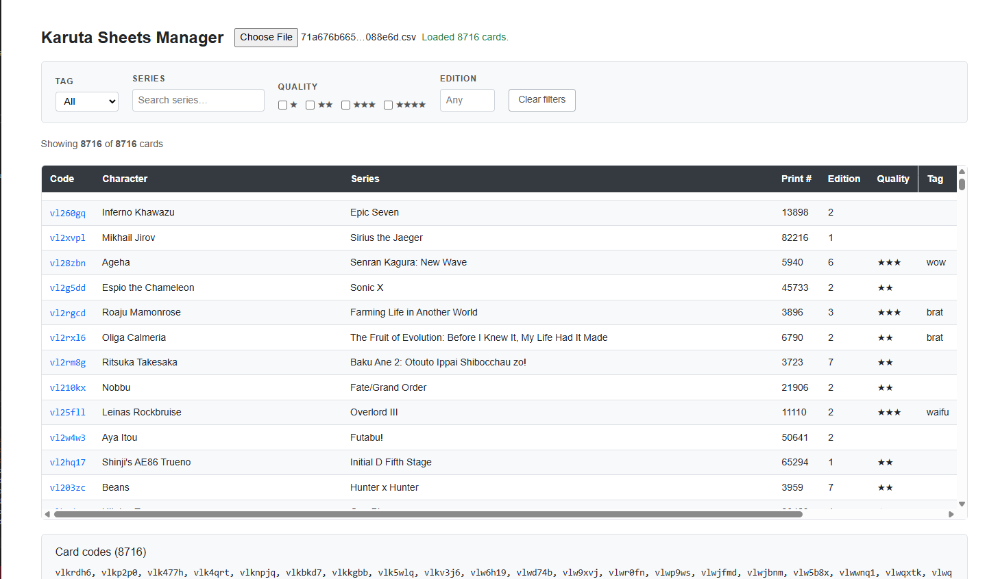
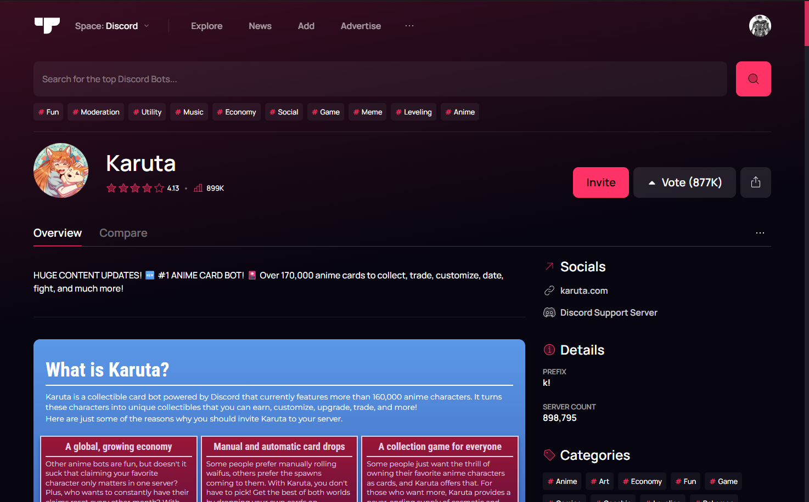

Karuta Card Manager
Een single-page applicatie waarmee gebruikers een CSV-bestand met hun Karuta-kaartcollectie kunnen uploaden. De applicatie stelt gebruikers in staat om hun kaarten te bekijken en te doorzoeken met verschillende filters.
- Type
- Single-page app
- Doel
- Karuta-collecties doorzoeken
- Getest met
- 8.716 kaarten
Screenshots · klik om te vergroten



Wat ik heb gebouwd
Een single-page Blazor-applicatie ontworpen om Karuta- kaartcollecties te beheren. Gebruikers kunnen een CSV-export van hun collectie uploaden, waarna de applicatie de gegevens verwerkt en de kaarten weergeeft in een overzichtelijke interface. De applicatie biedt filter- en zoekfunctionaliteit, waarmee gebruikers snel kaarten kunnen vinden op basis van criteria zoals personage, serie, editie en kwaliteit.
Technische stack
Wat ik heb geleerd
- Interactieve gebruikersinterfaces bouwen met Blazor
- Bestandsuploads en CSV-parsing verwerken in .NET
- Werken met LINQ voor het filteren en doorzoeken van data
- Herbruikbare componenten ontwerpen in een single-page applicatie
- Applicatiestatus beheren binnen Blazor-componenten